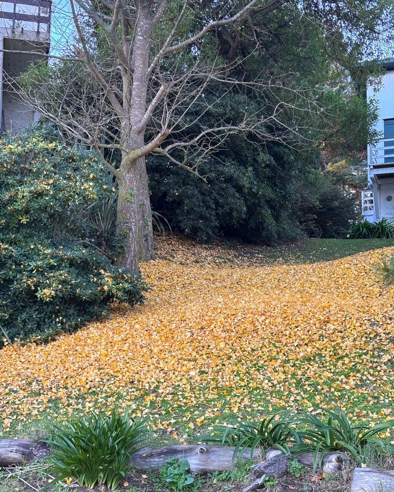
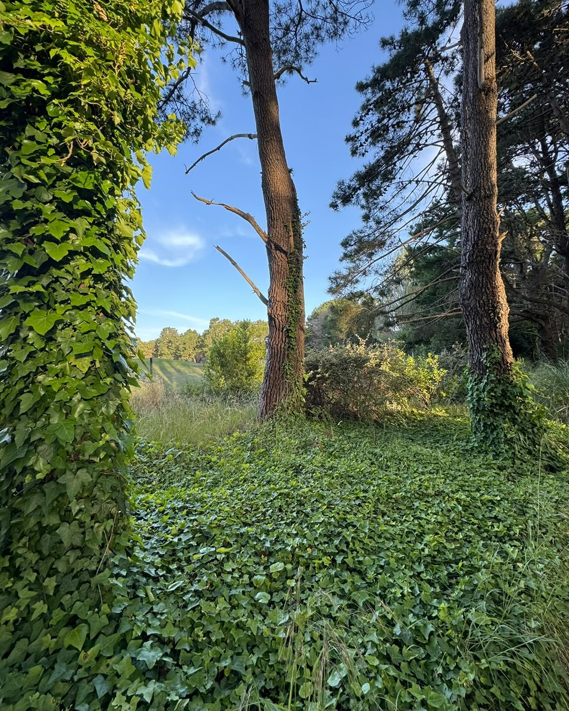
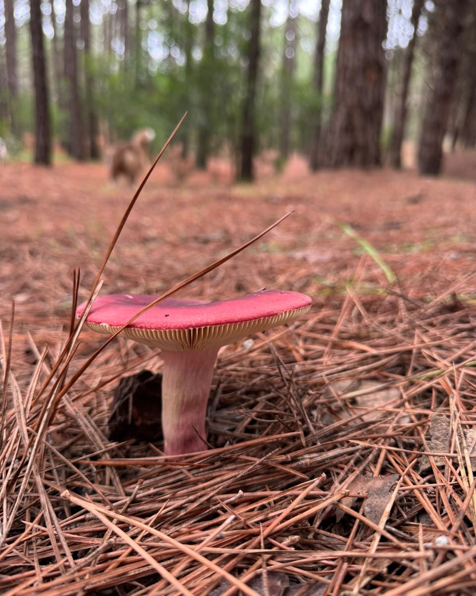
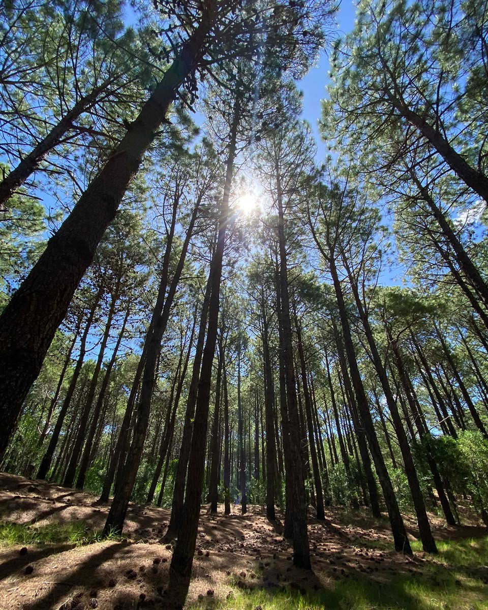
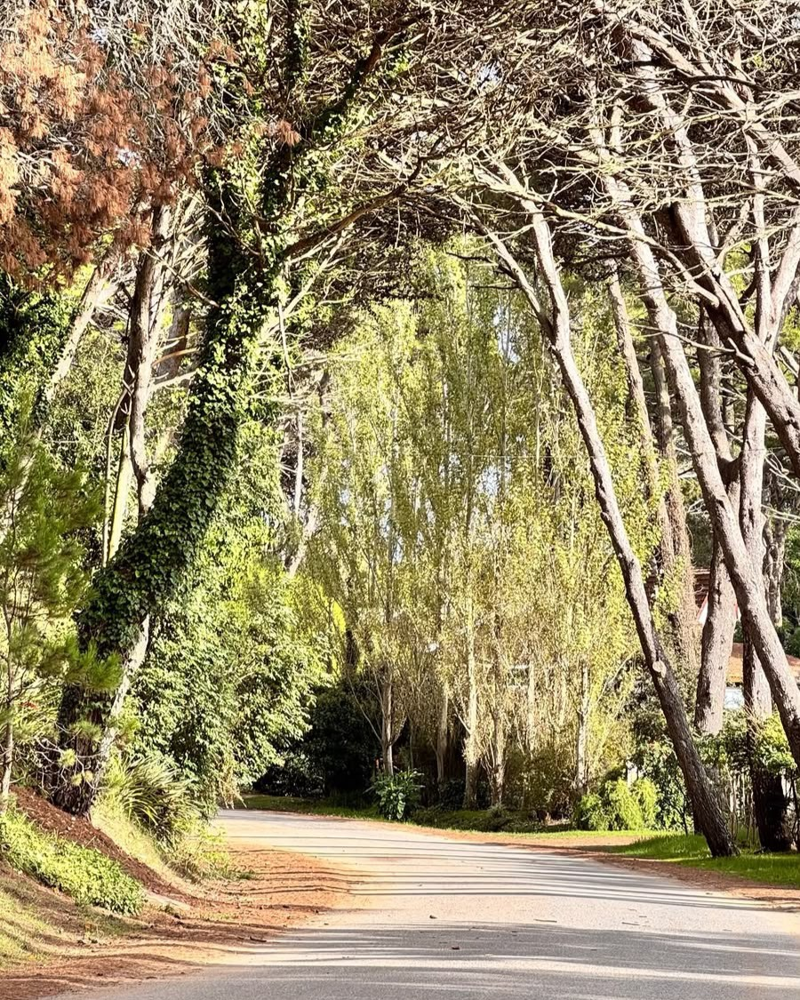
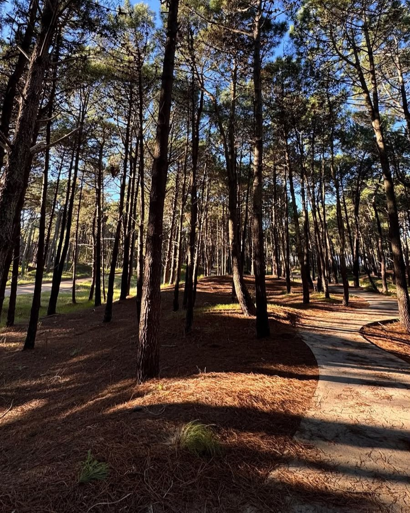

Otoño en el viejo Golf de Pinamar Norte

Bosque verde en primavera.

Hongo en el bosque de Pinamar.

Dia soleado entre los jovenes pinos

Av del Tiburon, una de las calles preferidas por los residentes.

Camino de los pioneros, conectando el bosque con la zona urbana.